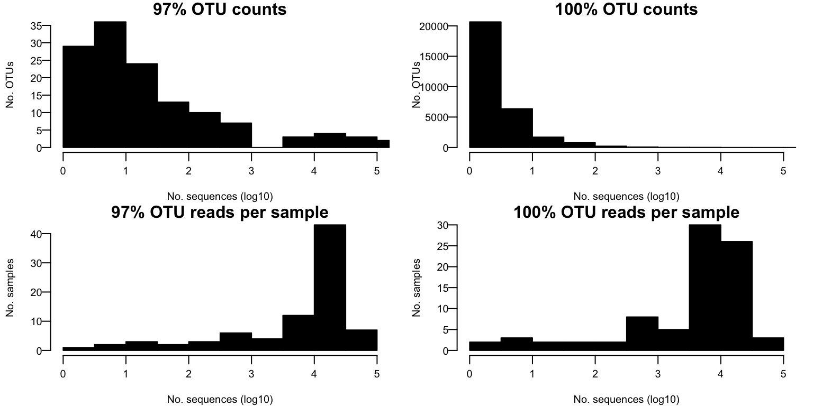
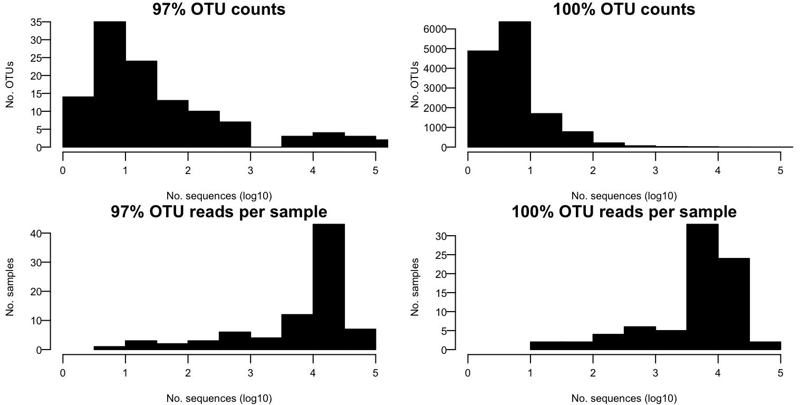
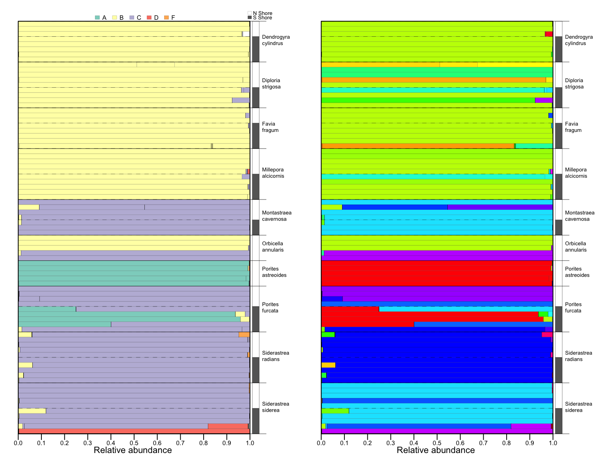
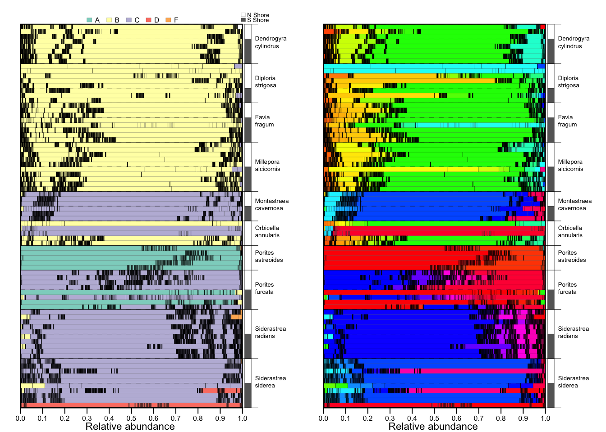
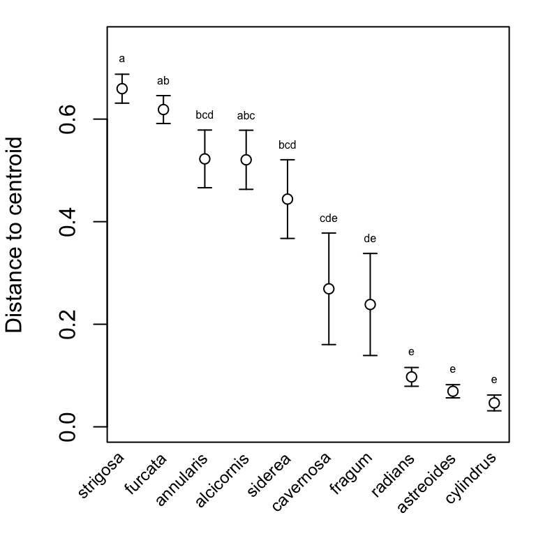
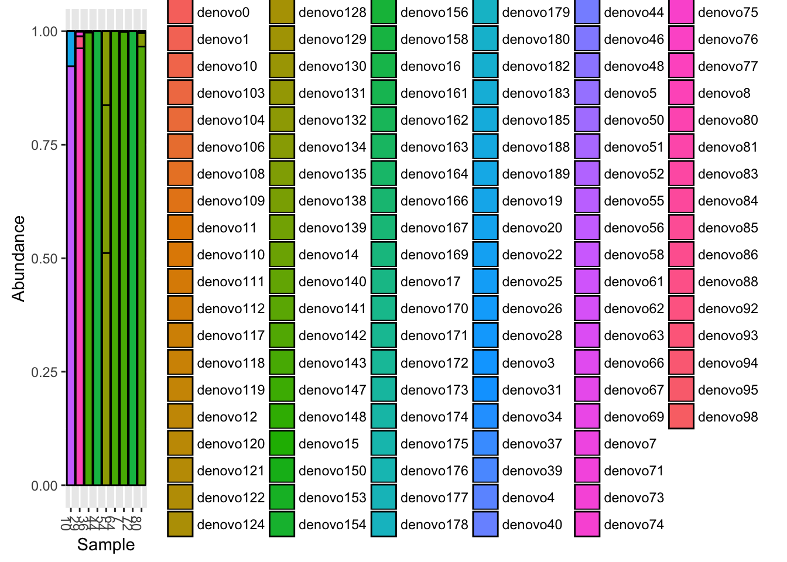

STJ2012 analysis
Ross Cunning
July 28, 2016
Data pre-processing
Import dataset
# Import OTU tables
OTU97 <- otu_table(read.table("data/97_otu_table.tsv", header=T, check.names=F, row.names=1,
skip=1, sep="\t", comment.char=""), taxa_are_rows=T)
OTU100 <- otu_table(read.table("data/100_otu_table.tsv", header=T, check.names=F, row.names=1,
skip=1, sep="\t", comment.char=""), taxa_are_rows=T)
# Import taxonomy
TAX97 <- tax_table(as.matrix(read.table("data/97_tax_assignments.txt", sep="\t", row.names=2,
col.names=c("Clade", "OTU.ID", "Taxonomy", "Eval", "Subtype"))))
TAX100 <- tax_table(as.matrix(read.table("data/100_tax_assignments.txt", sep="\t", row.names=2,
col.names=c("Clade", "OTU.ID", "Taxonomy", "Eval", "Subtype"))))
# Import sample data
SAM <- sample_data(read.delim("data/mapping_file.txt", sep="\t", header=T, row.names=1))
# Build phyloseq objects
phy97 <- phyloseq(OTU97, TAX97, SAM)
phy100 <- phyloseq(OTU100, TAX100, SAM)Descriptive statistics and distribution of OTU counts
# Compute summary statistics
stats <- function(phy) {
return(
data.frame(rangeotus=paste0(range(taxa_sums(phy)), collapse=" - "),
nsingles=length(taxa_sums(phy)[taxa_sums(phy) <= 1]),
rangerps=paste0(range(sample_sums(phy)), collapse=" - "),
amrps=paste(as.integer(mean(sample_sums(phy))),
as.integer(sd(sample_sums(phy))), sep=" ± "),
gmrps=paste(as.integer(exp(mean(log(sample_sums(phy))))),
as.integer(exp(sd(log(sample_sums(phy))))), sep=" ± "))
)
}
stats97 <- stats(phy97)
stats100 <- stats(phy100)
# Create and plot histograms
phy <- phy97
taxhist97 <- hist(log10(taxa_sums(phy97)), plot=F)
samhist97 <- hist(log10(sample_sums(phy97)), plot=F)
taxhist100 <- hist(log10(taxa_sums(phy100)), plot=F)
samhist100 <- hist(log10(sample_sums(phy100)), plot=F)
par(mfrow=c(2, 2), mar=c(3,3,1,1))
plot(taxhist97, col="black", main="97% OTU counts", xlim=c(0, 5), las=1, mgp=c(2,0.5,0),
xlab="No. sequences (log10)", ylab="No. OTUs", cex.lab=0.75, cex.axis=0.75)
plot(taxhist100, col="black", main="100% OTU counts", xlim=c(0, 5), las=1, mgp=c(2,0.5,0),
xlab="No. sequences (log10)", ylab="No. OTUs", cex.lab=0.75, cex.axis=0.75)
plot(samhist97, col="black", main="97% OTU reads per sample", xlim=c(0, 5), las=1, mgp=c(2,0.5,0),
xlab="No. sequences (log10)", ylab="No. samples", cex.lab=0.75, cex.axis=0.75)
plot(samhist100, col="black", main="100% OTU reads per sample", xlim=c(0, 5), las=1, mgp=c(2,0.5,0),
xlab="No. sequences (log10)", ylab="No. samples", cex.lab=0.75, cex.axis=0.75)
| 97% OTUs | 100% OTUs | |
|---|---|---|
| Total count in OTU table | 1099772 | 738482 |
| Number of OTUs | 132 | 29813 |
| Range of OTU counts | 2 - 386018 | 2 - 137998 |
| Number of singleton OTUs | 0 | 0 |
| Number of samples | 83 | 83 |
| Range of reads per sample | 3 - 56742 | 1 - 35719 |
| Mean (±SD) reads per sample (arithmetic) | 13250 ± 11973 | 8897 ± 8378 |
| Mean (±SD) reads per sample (geometric) | 4692 ± 10 | 2985 ± 10 |
Filter dataset
Filter samples by minimum count
# Set threshold number of reads
sn <- 10
# Remove samples with fewer reads than threshold
phy97.f <- prune_samples(sample_sums(phy97)>=sn, phy97)
phy100.f <- prune_samples(sample_sums(phy100)>=sn, phy100)- Number of samples remaining in 97% OTU dataset: 81
- Number of samples remaining in 100% OTU dataset: 78
Filter OTUs by minimum count
# Set threshold count
n <- 1
# Identify OTUs below threshold count
taxa97 <- taxa_sums(phy97.f)[which(taxa_sums(phy97.f) >= n)]
taxa100 <- taxa_sums(phy100.f)[which(taxa_sums(phy100.f) >= n)]
# Remove taxa below threshold count
phy97.f <- prune_taxa(names(taxa97), phy97.f)
phy100.f <- prune_taxa(names(taxa100), phy100.f) - Number of OTUs remaining in 97% dataset: 130
- Number of OTUs remaining in 97% dataset: 29813
Filtered data: descriptive statistics and distribution of OTUs
# Compute summary statistics
stats97.f <- stats(phy97.f)
stats100.f <- stats(phy100.f)
# Create and plot histograms
taxhist97 <- hist(log10(taxa_sums(phy97.f)), plot=F)
taxhist100 <- hist(log10(taxa_sums(phy100.f)), plot=F)
samhist97 <- hist(log10(sample_sums(phy97.f)), plot=F)
samhist100 <- hist(log10(sample_sums(phy100.f)), plot=F)
par(mfrow=c(2, 2), mar=c(3,3,1,1))
plot(taxhist97, col="black", main="97% OTU counts", xlim=c(0, 5), las=1, mgp=c(2,0.5,0),
xlab="No. sequences (log10)", ylab="No. OTUs", cex.lab=0.75, cex.axis=0.75)
plot(taxhist100, col="black", main="100% OTU counts", xlim=c(0, 5), las=1, mgp=c(2,0.5,0),
xlab="No. sequences (log10)", ylab="No. OTUs", cex.lab=0.75, cex.axis=0.75)
plot(samhist97, col="black", main="97% OTU reads per sample", xlim=c(0, 5), las=1, mgp=c(2,0.5,0),
xlab="No. sequences (log10)", ylab="No. samples", cex.lab=0.75, cex.axis=0.75)
plot(samhist100, col="black", main="100% OTU reads per sample", xlim=c(0, 5), las=1, mgp=c(2,0.5,0),
xlab="No. sequences (log10)", ylab="No. samples", cex.lab=0.75, cex.axis=0.75)
| 97% OTUs | 100% OTUs | |
|---|---|---|
| Total count in OTU table | 1099765 | 738459 |
| Number of OTUs | 130 | 29813 |
| Range of OTU counts | 2 - 386018 | 1 - 137995 |
| Number of singleton OTUs | 0 | 2 |
| Number of samples | 81 | 78 |
| Range of reads per sample | 10 - 56742 | 19 - 35719 |
| Mean (±SD) reads per sample (arithmetic) | 13577 ± 11935 | 9467 ± 8324 |
| Mean (±SD) reads per sample (geometric) | 5607 ± 7 | 4581 ± 5 |
Transform count data
# Convert to proportion (relative abundance)
phy97.f.p <- transform_sample_counts(phy97.f, function(x) x/sum(x))
phy100.f.p <- transform_sample_counts(phy100.f, function(x) x/sum(x))
# Apply transformation function
transform <- function(x) sqrt(x/sum(x)) # Set transformation function
phy97.f.t <- transform_sample_counts(phy97.f, transform) # Transform data
phy100.f.t <- transform_sample_counts(phy100.f, transform)Data analysis
Community composition barplots
Here the composition of each sample is plotted as a horizontal bar, sorted by species and shore. Each segment of the bar represents an individual OTU. In the lefthand plot, all OTUs are colored by clade, in the right OTU, all OTUs are given a unique color.
# Define function to plot Symbiodinium community composition
composition <- function(phy, col, legend=T) {
samdat <- data.frame(sample_data(phy))
samdat$Genus <- factor(samdat$Genus, levels=rev(levels(samdat$Genus)))
samdat$Species <- factor(samdat$Species, levels=rev(levels(samdat$Species)))
samdat$Shore <- factor(samdat$Shore, levels=rev(levels(samdat$Shore)))
samdat <- samdat[with(samdat, order(Genus, Species, Shore)), ]
typerelabund <- as.matrix(otu_table(phy)[order(data.frame(tax_table(phy))$Subtype),
rownames(samdat)])
shorebreaks <- c(as.character(samdat$Shore), "X")==c("X", as.character(samdat$Shore))
shorebreaks <- which(shorebreaks==F) - 1
spbreaks <- c(which(duplicated(samdat$Species)==F) - 1, nrow(samdat))
# Make Barplot
barplot(typerelabund, horiz=T, space=0, axes=F,axisnames=F, yaxs="i", col=col)
rect(0, 0, par("usr")[2], par("usr")[4], lwd=1, xpd=T)
axis(side=1, at=seq(0, 1, 0.1), line=0, tck=-0.025, mgp=c(0,0.25,0), cex.axis=0.7)
mtext(side=1, "Relative abundance", cex=0.7, line=1)
# Add legend
if (legend==T) {
legend(x=par("usr")[2]/2, y=par("usr")[4], xjust=0.5, yjust=0.25, horiz=T, bty="n", xpd=T,
cex=0.7, legend=c("A", "B", "C", "D", "F"), fill=taxcolors, x.intersp=0.5)
legend(x=par("usr")[2]-0.03, y=par("usr")[4], xjust=0, yjust=0.1, bty="n", xpd=T, cex=0.6,
pt.cex=0.6, legend=c("N Shore", "S Shore"), fill=c(0, "gray40"), y.intersp=0.7,
x.intersp=0.3)
}
# Add grouping bars for Shore
for (i in 1:length(shorebreaks)) {
lines(c(0, 1), c(shorebreaks[i], shorebreaks[i]), lty=2, lwd=0.25)
rect(1.01, shorebreaks[i], 1.04, shorebreaks[i+1], col=rep(c("gray40", 0), 50)[i],
lwd=0.25, xpd=T)
}
# Add lines to separate species and species names
for (i in 1:length(spbreaks)) {
lines(c(0, 1.07), c(spbreaks[i], spbreaks[i]), xpd=T, type="l", lwd=0.4)
text(1.03, (spbreaks[i] + spbreaks[i+1]) / 2, xpd=T, pos=4, cex=0.6,
labels=paste(samdat$Genus[which(duplicated(samdat$Species)==F)][i], "\n",
samdat$Species[which(duplicated(samdat$Species)==F)][i], sep=""))
}
}
par(mfrow=c(1,2), mar=c(2, 1.5, 2, 5), lwd=0.1, cex=0.7)
composition(phy97.f.p, col=taxcolors[data.frame(tax_table(phy97.f.p))[order(data.frame(tax_table(phy97.f.p))$Subtype), ]$Clade], legend=T)
composition(phy97.f.p, col=rainbow(ntaxa(phy97.f.p)), legend=F)
par(mfrow=c(1,2), mar=c(2, 1.5, 2, 5), lwd=0.1, cex=0.7)
composition(phy100.f.p, col=taxcolors[data.frame(tax_table(phy100.f.p))[order(data.frame(tax_table(phy100.f.p))$Subtype), ]$Clade], legend=T)
composition(phy100.f.p, col=rainbow(ntaxa(phy100.f.p)), legend=F)
phy.f.p <- phy97.f.p
phy.f.t <- phy97.f.tDifferences between species and shores
Whether Symbiodinium communities differ among species, or differ between north vs. south shores within species, is evaluated here using permutational analysis of variance (PERMANOVA).
# PERMANOVA for differences among species? Post-hoc: which spp are different?
permanova.spp.t <- adonis(phyloseq::distance(phy.f.t, "bray") ~ Species,
data=as(sample_data(phy.f.t), "data.frame"), permutations=9999)
dmat <- as(phyloseq::distance(phy.f.t, "bray"), "matrix")
df <- as(sample_data(phy.f.t), "data.frame")
pairs <- data.frame(t(combn(levels(df$Species), 2)), stringsAsFactors=F)
p.pairs <- setNames(rep(NA, nrow(pairs)), with(pairs, paste(X1, X2, sep='-')))
for (i in 1:nrow(pairs)) {
dfs <- subset(df, Species %in% c(pairs[i,1], pairs[i,2]))
dmats <- dmat[rownames(dfs), rownames(dfs)]
set.seed(152470)
permanova <- adonis(dmats ~ Species, data=dfs, permutations=999)
p.pairs[i] <- permanova$aov.tab$`Pr(>F)`[1]
}
multcompLetters(p.pairs)## alcicornis annularis astreoides cavernosa cylindrus fragum
## "ab" "ab" "c" "d" "a" "a"
## furcata radians siderea strigosa
## "e" "f" "d" "b"# Compute within- and between-pool statistics for each Species
shorestats <- data.frame(matrix(dimnames=list(levels(data.frame(sample_data(phy.f.t))$Species),
c("Species", "n", "overall", "within",
"between", "R2", "bd", "p")), ncol=8, nrow=10))
for (i in 1:nlevels(data.frame(sample_data(phy.f.t))$Species)) {
sp <- levels(data.frame(sample_data(phy.f.t))$Species)[i]
shorestats$Species[i] <- sp
phy.f.t.species <- subset_samples(phy.f.t, Species==sp) # Set temp phyloseq object
shorestats$n[i] <- nsamples(phy.f.t.species)
md <- meandist(phyloseq::distance(phy.f.t.species, "bray"),
sample_data(phy.f.t.species)$Shore)
shorestats$within[i] <- summary(md)$W # Weighted mean dissimilarity within both Pools
shorestats$between[i] <- summary(md)$B # Mean dissimilarity between Pools
shorestats$overall[i] <- summary(md)$D # Overall dissimilarity
if (nlevels(as(sample_data(phy.f.t.species), "data.frame")$Shore) > 1) {
set.seed(70235)
permanova <- adonis(phyloseq::distance(phy.f.t.species, "bray") ~ Shore,
data=as(sample_data(phy.f.t.species), "data.frame"), permutations=999)
shorestats$R2[i] <- permanova$aov.tab$"R2"[1] # PERMANOVA partial R-squared
shorestats$p[i] <- permanova$aov.tab$"Pr(>F)"[1] # PERMANOVA p-value
bd <- betadisper(phyloseq::distance(phy.f.t.species, "bray"),
group=as(sample_data(phy.f.t.species), "data.frame")$Shore)
shorestats$bd[i] <- TukeyHSD(bd)$group[4]
} else {
shorestats$R2[i] <- NA
shorestats$p[i] <- NA
shorestats$bd[i] <- NA
}
}
knitr::kable(shorestats) # dendrogyra, porites furcata, and siderastrea siderea differ by shore| Species | n | overall | within | between | R2 | bd | p | |
|---|---|---|---|---|---|---|---|---|
| alcicornis | alcicornis | 10 | 0.63 | 0.67 | 0.59 | 0.04 | 1.00 | 0.72 |
| annularis | annularis | 5 | 0.60 | 0.60 | NaN | NA | NA | NA |
| astreoides | astreoides | 5 | 0.10 | 0.10 | NaN | NA | NA | NA |
| cavernosa | cavernosa | 7 | 0.33 | 0.38 | 0.29 | 0.12 | 0.44 | 0.87 |
| cylindrus | cylindrus | 8 | 0.07 | 0.06 | 0.07 | 0.23 | 0.66 | 0.09 |
| fragum | fragum | 8 | 0.29 | 0.34 | 0.24 | 0.09 | 0.50 | 0.82 |
| furcata | furcata | 9 | 0.83 | 0.67 | 0.97 | 0.38 | 0.61 | 0.03 |
| radians | radians | 10 | 0.14 | 0.15 | 0.14 | 0.10 | 0.57 | 0.75 |
| siderea | siderea | 10 | 0.55 | 0.57 | 0.54 | 0.08 | 0.48 | 0.53 |
| strigosa | strigosa | 9 | 0.89 | 0.87 | 0.90 | 0.15 | 0.78 | 0.27 |
Beta diversity
Beta diversity is evaluated here as the multivariate dispersion of samples within a coral species group. Principal coordinate analysis on Bray-Curtis dissimilarities is used to calculate average distance-to-centroid values for each species group, which are then compared statistically by a permutation test. This analysis is implemented using betadisper() in the vegan package, based on Anderson (2006).
# Calculate distances to species centroids for each sample in principal coordinate space
sambd <- betadisper(d=vegdist(t(otu_table(phy.f.t)), method="bray"),
group=data.frame(sample_data(phy.f.t))$Species, type="centroid",
bias.adjust=TRUE)
# Calculate each species' mean distance to centroid and standard error
sambdsumm <- aggregate(data.frame(mean=sambd$distances), by=list(group=sambd$group), FUN=mean)
sambdsumm$se <- aggregate(sambd$distances, by=list(group=sambd$group),
FUN=function(x) sd(x)/sqrt(length(x)))$x
# Determine order of decreasing mean dispersion
sambdsumm.ord <- sambdsumm[order(sambdsumm$mean, decreasing=T), ]
# Update betadisper object with species in decreasing order of mean dispersion
sambd <- betadisper(d=vegdist(t(otu_table(phy.f.t)), method="bray"),
group=factor(data.frame(sample_data(phy.f.t))$Species, levels=as.character(sambdsumm.ord$group)), type="centroid", bias.adjust=TRUE)
# Use permutations to perform pairwise comparisons of group mean dispersions
sampt <- permutest(sambd, pairwise=T)
saml <- multcompLetters(sampt$pairwise$permuted)
# Figure: Distance to centroids
par(mfrow=c(1,1), mar=c(3.5,4,1,1), lwd=1)
with(sambdsumm.ord, {
plot(mean, type="n", ylim=c(0, 0.75), ylab="Distance to centroid", xaxt="n", xlab="")
arrows(1:10, mean - se, 1:10, mean + se, length=0.05, angle=90, code=3)
points(1:10, mean, cex=1, pch=21, bg="white")
text(1:10, par("usr")[3]-0.025, srt=45, adj=1, xpd=T, cex=0.75,
labels=levels(SAM$Species)[order(sambdsumm$mean, decreasing=T)])
text(1:10, mean + se + 0.03, labels=saml$Letters[as.character(group)], cex=0.5)
})
dstr97 <- subset_samples(phy97.f.p, Species=="strigosa")
plot_bar(dstr97, x="Sample", y="Abundance", fill="OTU")
plot_bar(dstr97, x="Sample", y="Abundance", fill="Subtype")
# D strigosa hosted B1, B24, B35, B38, and C3 in Finney et al.... B25, B35, and B38 are missing from ref database.
# Also try 100% OTUs -- must filter more first...
#dstr100.f <- subset_samples(phy100.f, Species=="strigosa")
#dstr100.f.p <- transform_sample_counts(dstr100.f, function(x) x/sum(x))
#dstr100.f.p.f <- prune_taxa(rownames(otu_table(dstr100.f.p))[which(rowSums(otu_table(dstr100.f.p)) > 0.01)],
# dstr100.f.p)
#
#plot_bar(dstr100.f.p.f, x="Sample", y="Abundance", fill="OTU")
#plot_bar(dstr100, x="Sample", y="Abundance", fill="Subtype")
#sample_names(dstr100.f)
#subset_samples(dstr100, Sample=="7")
#otu_table(dstr100.f)
#dstr100.f.p <- transform_sample_counts(dstr100.f, function(x) x/sum(x))
#colSums(otu_table(dstr100.f.p)[rowSums(otu_table(dstr100.f.p)) > 0.1, ])Niche breadth of Symbiodinium
# Mean dispersion of clades
otubd <- betadisper(d=vegdist(otu_table(phy.f.t), method="bray"),
group=data.frame(tax_table(phy.f.t))$Clade, type="centroid")
otubd##
## Homogeneity of multivariate dispersions
##
## Call: betadisper(d = vegdist(otu_table(phy.f.t), method = "bray"),
## group = data.frame(tax_table(phy.f.t))$Clade, type = "centroid")
##
## No. of Positive Eigenvalues: 125
## No. of Negative Eigenvalues: 3
##
## Average distance to centroid:
## A B C D F G
## 0.659 0.696 0.695 0.632 0.675 0.533
##
## Eigenvalues for PCoA axes:
## PCoA1 PCoA2 PCoA3 PCoA4 PCoA5 PCoA6 PCoA7 PCoA8
## 2.4 2.0 1.7 1.5 1.5 1.4 1.4 1.4# Number of samples each OTU appears in
nsamp <- data.frame(n=rowSums(otu_table(phy.f.t) != 0))
nsamp$Subtype <- data.frame(tax_table(phy.f.t))[rownames(nsamp), "Subtype"]
nsamp[order(nsamp$n, decreasing=T), ]## n Subtype
## denovo143 38 B1_AF333511
## denovo92 21 C131_JF320826
## denovo175 17 A4_AF333509
## denovo51 13 C1cstar_AY239364
## denovo173 6 D1_AF334660
## denovo185 6 F5.2_AM748594
## denovo158 5 B1_AF333511
## denovo19 4 C7_AF499797
## denovo98 4 B1_AF333511
## denovo58 4 D1a.1_JF683338
## denovo162 4 C45a_AY765404
## denovo174 2 C1cstar_AY239364
## denovo11 2 C1cstar_AY239364
## denovo142 2 B19_DQ865212
## denovo77 2 D1a_AF499802
## denovo83 2 F5.2_AM748594
## denovo134 2 B19_DQ865212
## denovo135 2 B19_DQ865212
## denovo26 1 C45a_AY765404
## denovo25 1 B112_AF360566
## denovo22 1 G100_AB253788
## denovo20 1 A4_AF333509
## denovo28 1 G3.2_KC597694
## denovo176 1 C31_AY258496
## denovo177 1 B10_AF499787
## denovo172 1 C1002_DQ838544
## denovo170 1 F5.2_AM748594
## denovo171 1 F5.2_AM748594
## denovo178 1 B1_AF333511
## denovo179 1 B19_DQ865212
## denovo18 1 B1_AF333511
## denovo12 1 C31.1_HQ630876
## denovo10 1 G100_AB253788
## denovo16 1 F5.2_AM748594
## denovo17 1 G3.2_KC597694
## denovo14 1 G100_AB253788
## denovo15 1 C17.2_FJ461513
## denovo149 1 B19_DQ865212
## denovo148 1 B1_AF333511
## denovo141 1 A4_AF333509
## denovo140 1 F5.2_AM748594
## denovo147 1 A4_AF333509
## denovo129 1 D1a_AF499802
## denovo128 1 G3.1_KC597688
## denovo154 1 C1cstar_AY239364
## denovo156 1 A4_AF333509
## denovo150 1 B1_AF333511
## denovo153 1 B19_DQ865212
## denovo93 1 F5.2_AM748594
## denovo90 1 C1.6_FJ461493
## denovo91 1 A4_AF333509
## denovo94 1 B112_AF360566
## denovo95 1 A4_AF333509
## denovo78 1 B7_AF499784
## denovo79 1 B1_AF333511
## denovo71 1 B112_AF360566
## denovo72 1 B16_AY258469
## denovo73 1 B1_AF333511
## denovo74 1 C1144_DQ182637
## denovo75 1 F5.2_AM748594
## denovo76 1 C31.1_HQ630876
## denovo85 1 B19_DQ865212
## denovo84 1 C131_JF320826
## denovo86 1 B1_AF333511
## denovo81 1 C1cstar_AY239364
## denovo80 1 C66_AY589771
## denovo82 1 C45a_AY765404
## denovo121 1 C15_AY239369
## denovo120 1 A4_AF333509
## denovo122 1 C21.2_JF683324
## denovo88 1 C1cstar_AY239364
## denovo69 1 B1_AF333511
## denovo63 1 B1_AF333511
## denovo62 1 C1cstar_AY239364
## denovo61 1 B1_AF333511
## denovo67 1 B1_AF333511
## denovo66 1 F5.2_AM748594
## denovo138 1 A4_AF333509
## denovo139 1 B1_AF333511
## denovo132 1 B2_AF333512
## denovo133 1 C45a_AY765404
## denovo130 1 B1_AF333511
## denovo131 1 C131_JF320826
## denovo56 1 B1_AF333511
## denovo55 1 C1cstar_AY239364
## denovo52 1 F5.2_AM748594
## denovo53 1 B1_AF333511
## denovo50 1 B16_AY258469
## denovo183 1 B101_AY074986
## denovo182 1 B1_AF333511
## denovo180 1 B1_AF333511
## denovo189 1 B5_AF499781
## denovo188 1 B5_AF499781
## denovo109 1 F5.2_AM748594
## denovo108 1 B10_AF499787
## denovo106 1 B19_DQ865212
## denovo104 1 B115_AF360572
## denovo103 1 C3.22_HE579010
## denovo102 1 C131_JF320826
## denovo40 1 B1_AF333511
## denovo44 1 C1cstar_AY239364
## denovo46 1 B19_DQ865212
## denovo49 1 A4_AF333509
## denovo48 1 F5.2_AM748594
## denovo0 1 C1cstar_AY239364
## denovo1 1 B1_AF333511
## denovo3 1 B1_AF333511
## denovo4 1 C131_JF320826
## denovo5 1 C1cstar_AY239364
## denovo7 1 B122_EU074871
## denovo8 1 B1_AF333511
## denovo9 1 B19_DQ865212
## denovo110 1 C15.26_KC597686
## denovo111 1 B125_EU074865
## denovo112 1 B119_EU099825
## denovo117 1 A4_AF333509
## denovo118 1 B125_EU074865
## denovo119 1 C22_AY239373
## denovo34 1 C31_AY258496
## denovo36 1 D2_AY686649
## denovo37 1 C1cstar_AY239364
## denovo31 1 B16_AY258469
## denovo39 1 C1002_DQ838544
## denovo124 1 B1_AF333511
## denovo164 1 C1cstar_AY239364
## denovo167 1 B1_AF333511
## denovo166 1 C1_AF333515
## denovo161 1 C1cstar_AY239364
## denovo163 1 C17.2_FJ461513
## denovo169 1 F5.2_AM748594nsamp## n Subtype
## denovo26 1 C45a_AY765404
## denovo25 1 B112_AF360566
## denovo22 1 G100_AB253788
## denovo20 1 A4_AF333509
## denovo28 1 G3.2_KC597694
## denovo176 1 C31_AY258496
## denovo177 1 B10_AF499787
## denovo174 2 C1cstar_AY239364
## denovo175 17 A4_AF333509
## denovo172 1 C1002_DQ838544
## denovo173 6 D1_AF334660
## denovo170 1 F5.2_AM748594
## denovo171 1 F5.2_AM748594
## denovo178 1 B1_AF333511
## denovo179 1 B19_DQ865212
## denovo18 1 B1_AF333511
## denovo19 4 C7_AF499797
## denovo12 1 C31.1_HQ630876
## denovo10 1 G100_AB253788
## denovo11 2 C1cstar_AY239364
## denovo16 1 F5.2_AM748594
## denovo17 1 G3.2_KC597694
## denovo14 1 G100_AB253788
## denovo15 1 C17.2_FJ461513
## denovo149 1 B19_DQ865212
## denovo148 1 B1_AF333511
## denovo143 38 B1_AF333511
## denovo142 2 B19_DQ865212
## denovo141 1 A4_AF333509
## denovo140 1 F5.2_AM748594
## denovo147 1 A4_AF333509
## denovo129 1 D1a_AF499802
## denovo128 1 G3.1_KC597688
## denovo158 5 B1_AF333511
## denovo154 1 C1cstar_AY239364
## denovo156 1 A4_AF333509
## denovo150 1 B1_AF333511
## denovo153 1 B19_DQ865212
## denovo92 21 C131_JF320826
## denovo93 1 F5.2_AM748594
## denovo90 1 C1.6_FJ461493
## denovo91 1 A4_AF333509
## denovo94 1 B112_AF360566
## denovo95 1 A4_AF333509
## denovo98 4 B1_AF333511
## denovo78 1 B7_AF499784
## denovo79 1 B1_AF333511
## denovo71 1 B112_AF360566
## denovo72 1 B16_AY258469
## denovo73 1 B1_AF333511
## denovo74 1 C1144_DQ182637
## denovo75 1 F5.2_AM748594
## denovo76 1 C31.1_HQ630876
## denovo77 2 D1a_AF499802
## denovo85 1 B19_DQ865212
## denovo84 1 C131_JF320826
## denovo86 1 B1_AF333511
## denovo81 1 C1cstar_AY239364
## denovo80 1 C66_AY589771
## denovo83 2 F5.2_AM748594
## denovo82 1 C45a_AY765404
## denovo121 1 C15_AY239369
## denovo120 1 A4_AF333509
## denovo122 1 C21.2_JF683324
## denovo88 1 C1cstar_AY239364
## denovo69 1 B1_AF333511
## denovo63 1 B1_AF333511
## denovo62 1 C1cstar_AY239364
## denovo61 1 B1_AF333511
## denovo67 1 B1_AF333511
## denovo66 1 F5.2_AM748594
## denovo138 1 A4_AF333509
## denovo139 1 B1_AF333511
## denovo132 1 B2_AF333512
## denovo133 1 C45a_AY765404
## denovo130 1 B1_AF333511
## denovo131 1 C131_JF320826
## denovo134 2 B19_DQ865212
## denovo135 2 B19_DQ865212
## denovo58 4 D1a.1_JF683338
## denovo56 1 B1_AF333511
## denovo55 1 C1cstar_AY239364
## denovo52 1 F5.2_AM748594
## denovo53 1 B1_AF333511
## denovo50 1 B16_AY258469
## denovo51 13 C1cstar_AY239364
## denovo185 6 F5.2_AM748594
## denovo183 1 B101_AY074986
## denovo182 1 B1_AF333511
## denovo180 1 B1_AF333511
## denovo189 1 B5_AF499781
## denovo188 1 B5_AF499781
## denovo109 1 F5.2_AM748594
## denovo108 1 B10_AF499787
## denovo106 1 B19_DQ865212
## denovo104 1 B115_AF360572
## denovo103 1 C3.22_HE579010
## denovo102 1 C131_JF320826
## denovo40 1 B1_AF333511
## denovo44 1 C1cstar_AY239364
## denovo46 1 B19_DQ865212
## denovo49 1 A4_AF333509
## denovo48 1 F5.2_AM748594
## denovo0 1 C1cstar_AY239364
## denovo1 1 B1_AF333511
## denovo3 1 B1_AF333511
## denovo4 1 C131_JF320826
## denovo5 1 C1cstar_AY239364
## denovo7 1 B122_EU074871
## denovo8 1 B1_AF333511
## denovo9 1 B19_DQ865212
## denovo110 1 C15.26_KC597686
## denovo111 1 B125_EU074865
## denovo112 1 B119_EU099825
## denovo117 1 A4_AF333509
## denovo118 1 B125_EU074865
## denovo119 1 C22_AY239373
## denovo34 1 C31_AY258496
## denovo36 1 D2_AY686649
## denovo37 1 C1cstar_AY239364
## denovo31 1 B16_AY258469
## denovo39 1 C1002_DQ838544
## denovo124 1 B1_AF333511
## denovo164 1 C1cstar_AY239364
## denovo167 1 B1_AF333511
## denovo166 1 C1_AF333515
## denovo161 1 C1cstar_AY239364
## denovo163 1 C17.2_FJ461513
## denovo162 4 C45a_AY765404
## denovo169 1 F5.2_AM748594?order## Help on topic 'order' was found in the following packages:
##
## Package Library
## data.table /Library/Frameworks/R.framework/Versions/3.2/Resources/library
## BiocGenerics /Library/Frameworks/R.framework/Versions/3.2/Resources/library
## base /Library/Frameworks/R.framework/Resources/library
##
##
## Using the first match ...plot_richness(phy.f, x=“Species”)